Wolfgang Stammer
Symbolic Concepts, Explanations and Interactions
Postdoctoral Researcher
CV & ML Group, Max Planck Institute for Informatics
Associated Member, "Neuroexplicit Models" Research Training Group
Email: wolfgang [dot] stammer [at] mpi-inf [dot] mpg [dot] de
Currently, I am a Postdoctoral Researcher in the Computer Vision and Machine Learning Group at the Max Planck Institute for Informatics, under the supervision of Prof. Bernt Schiele. Additionally, I am an associated member of the Research Training Group "Neuroexplicit Models" at TU Darmstadt. I completed my PhD with excellence under the supervision of Prof. Kristian Kersting in the AI & ML lab at the TU Darmstadt.
My research revolves around the question: "How can we create performative AI models that allow users to understand and interact with their internal representations?"
I believe that for AI systems to explain their decisions effectively, they must communicate with human stakeholders using verifiable, concept-level statements. Importantly, this communication should not be one-sided; like human conversations, it should involve active discussion and interaction.
As part of this, I'm also interested in how cognitive systems—whether biological or artificial—can learn abstract concepts without strong supervision. How can they bind information to a specific representation? What kind of representation is it?
Events I co-organised (Workshops, Tutorials, Symposiums):
- "Semantic, Symbolic and Interpretable Machine Learning" ELLIS Workshop at Elise Wrap Up Conference 2024
- "Interactive Machine Learning" Workshop at AAAI 2022
- "Explanations in Interactive Machine Learning" Tutorial at AAAI 2022
- "Perspectives on Learning" Doctoral Symposium on Cognitive Science of German Society for Cognitive Science, 2022
Invited Lectures:
- "Concept-based Explanations" @ Karlsruhe Institute of Technology (KIT), 2025 as part of block lecture "Explainable Artificial Intelligence"
Apart from research I am very passionate about writing and playing music (see below :)).
Selected Publications
Show me in Google Scholar
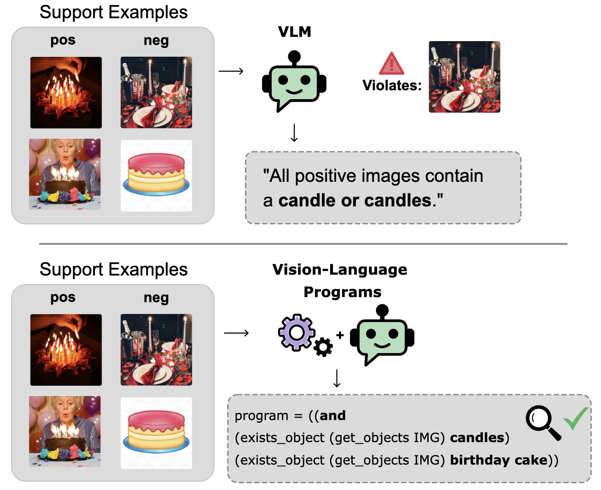
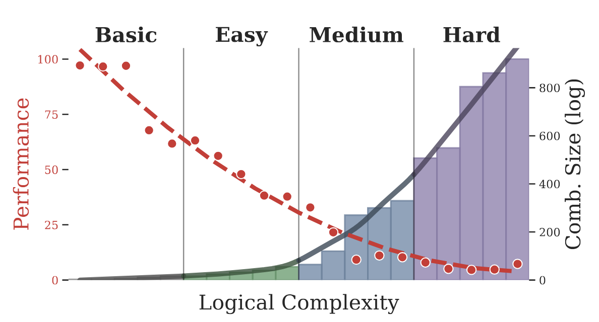
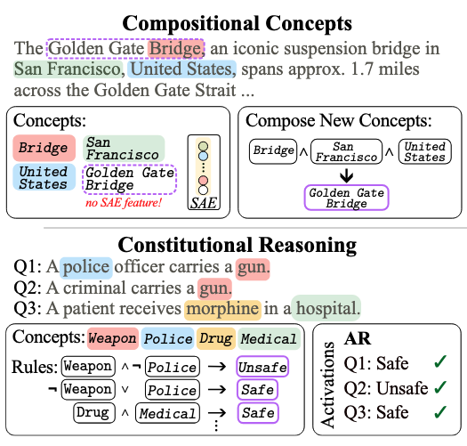
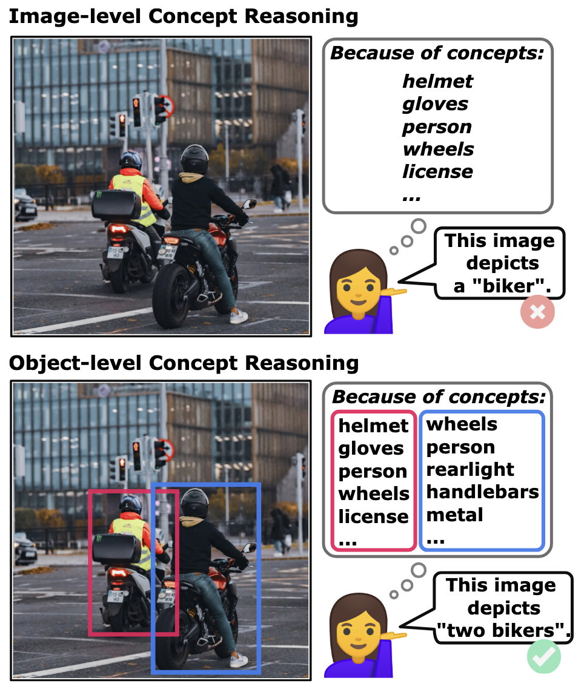
Object-Centric Concept Bottlenecks
David Steinmann, Wolfgang Stammer, Antonia Wüst, Kristian Kersting
[NeurIPS 2025] [GitHub]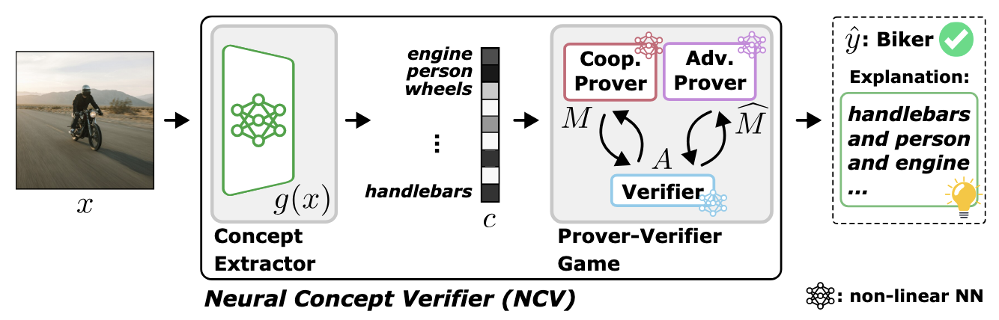
Neural Concept Verifier: Scaling Prover-Verifier Games via Concept Encodings
Berkant Turan, Suhrab Asadulla, David Steinmann, Wolfgang Stammer, Sebastian Pokutta
[Actionable Interpretability Workshop @ICML 2025]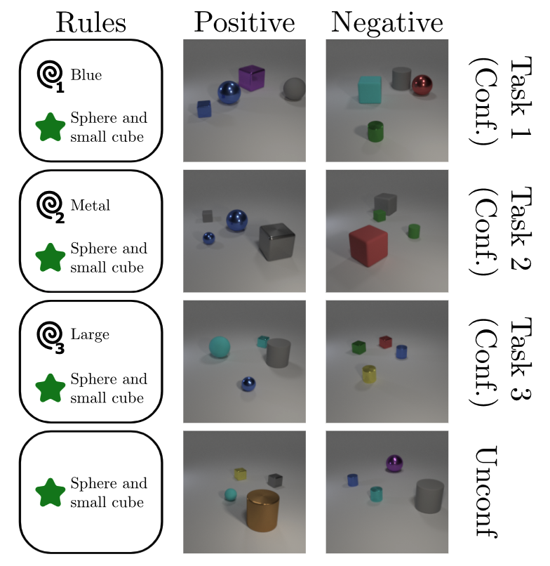
Where is the Truth? The Risk of Getting Confounded in a Continual World
Florian Peter Busch, Roshni Kamath, Rupert Mitchell, Wolfgang Stammer, Kristian Kersting, Martin Mundt
[ICML 2025 (spotlight)]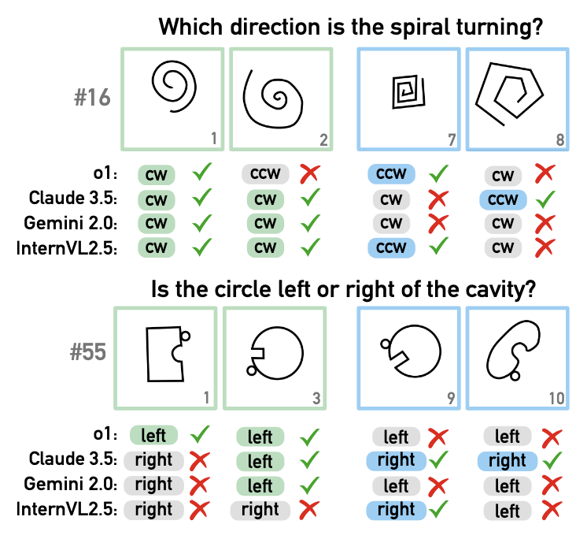
Bongard in Wonderland: Visual Puzzles that Still Make AI Go Mad?
Antonia Wüst, Tim Tobiasch, Lukas Helff, Inga Ibs, Wolfgang Stammer, Devendra S. Dhami, Constantin A. Rothkopf, Kristian Kersting
[ICML 2025]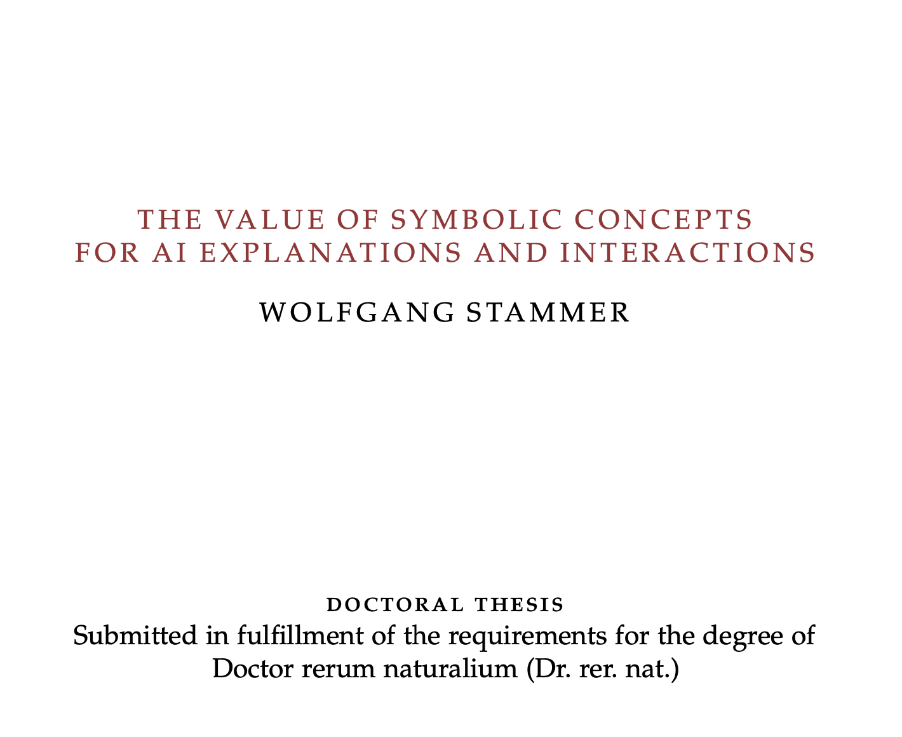
The Value of Symbolic Concepts for AI Explanations and Interactions (Dissertation)
Wolfgang Stammer
[Technical University Darmstadt]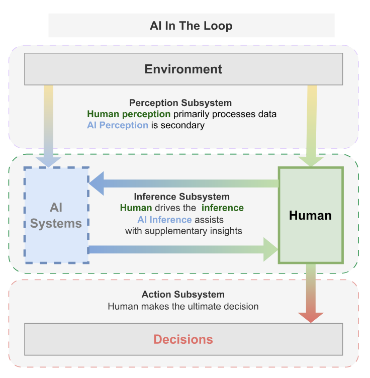
Human-in-the-loop or AI-in-the-loop? Automate or Collaborate?
Sriraam Natarajan, Saurabh Mathur, Sahil Sidheekh, Wolfgang Stammer, Kristian Kersting
[AAAI 2025]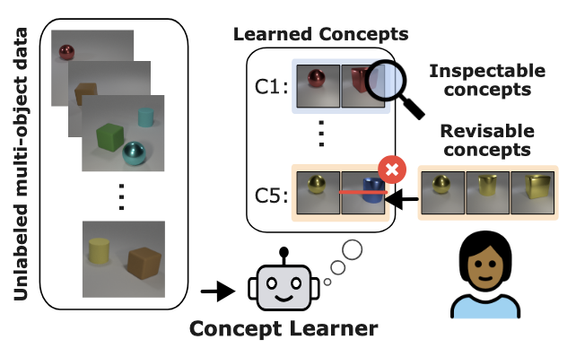
Neural Concept Binder
Wolfgang Stammer, Antonia Wüst, David Steinmann, Kristian Kersting
[NeurIPS 2024] [GitHub]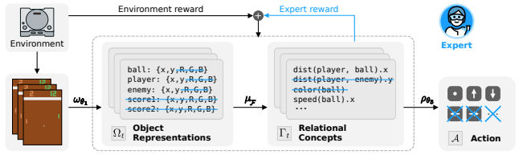
Interpretable Concept Bottlenecks to Align Reinforcement Learning Agents
Quentin Delfosse, Sebastian Sztwiertnia, Mark Rothermel, Wolfgang Stammer, Kristian Kersting
[NeurIPS 2024] [GitHub]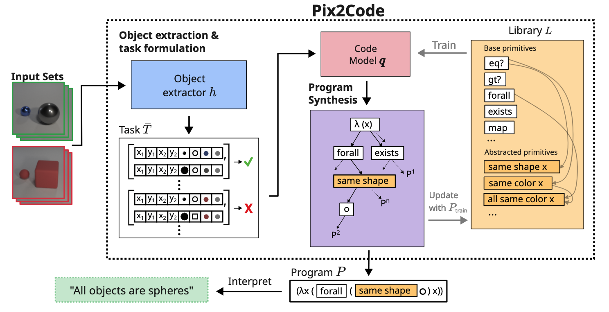
Pix2code: Learning to compose neural visual concepts as programs
Antonia Wüst, Wolfgang Stammer, Quentin Delfosse, Devendra Singh Dhami, Kristian Kersting
[UAI 2024] (oral) [GitHub]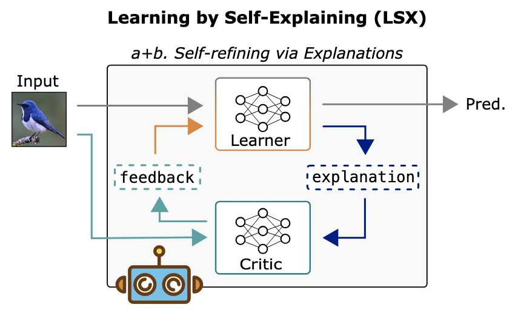
Learning by Self-Explaining
Wolfgang Stammer, Felix Friedrich, David Steinmann, Hikaru Shindo, Kristian Kersting
[TMLR 2024] [GitHub]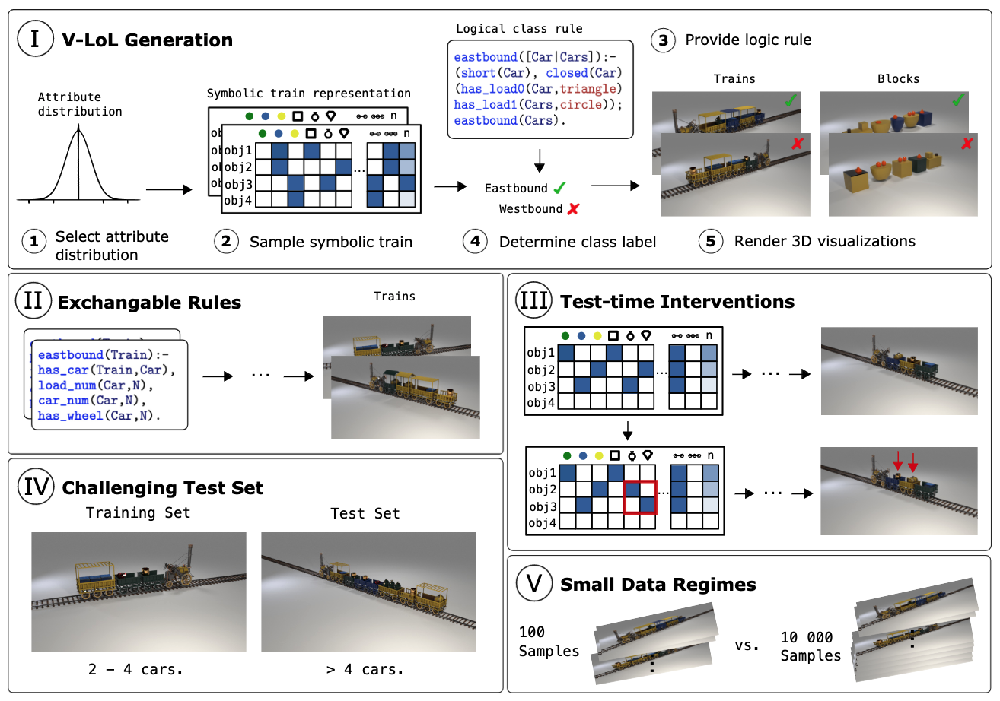
V-LoL: A Diagnostic Dataset for Visual Logical Learning
Lukas Helff, Wolfgang Stammer, Hikaru Shindo, Devendra Singh Dhami, Kristian Kersting
[DMLR 2024] [Project Page] [HuggingFace]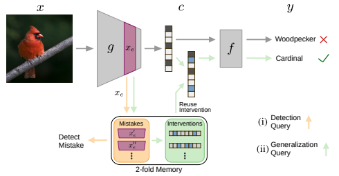
Learning to Intervene on Concept Bottlenecks
David Steinmann, Wolfgang Stammer, Felix Friedrich, Kristian Kersting
[ICML 2024] [GitHub]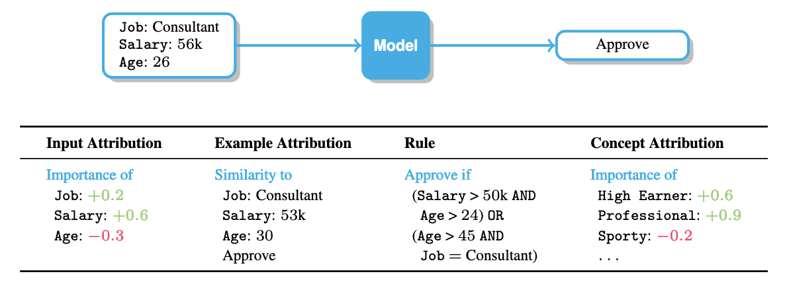
Leveraging explanations in interactive machine learning: An overview
Stefano Teso, Öznur Alkan, Wolfgang Stammer, Elizabeth Daly
[Frontiers in AI 2023]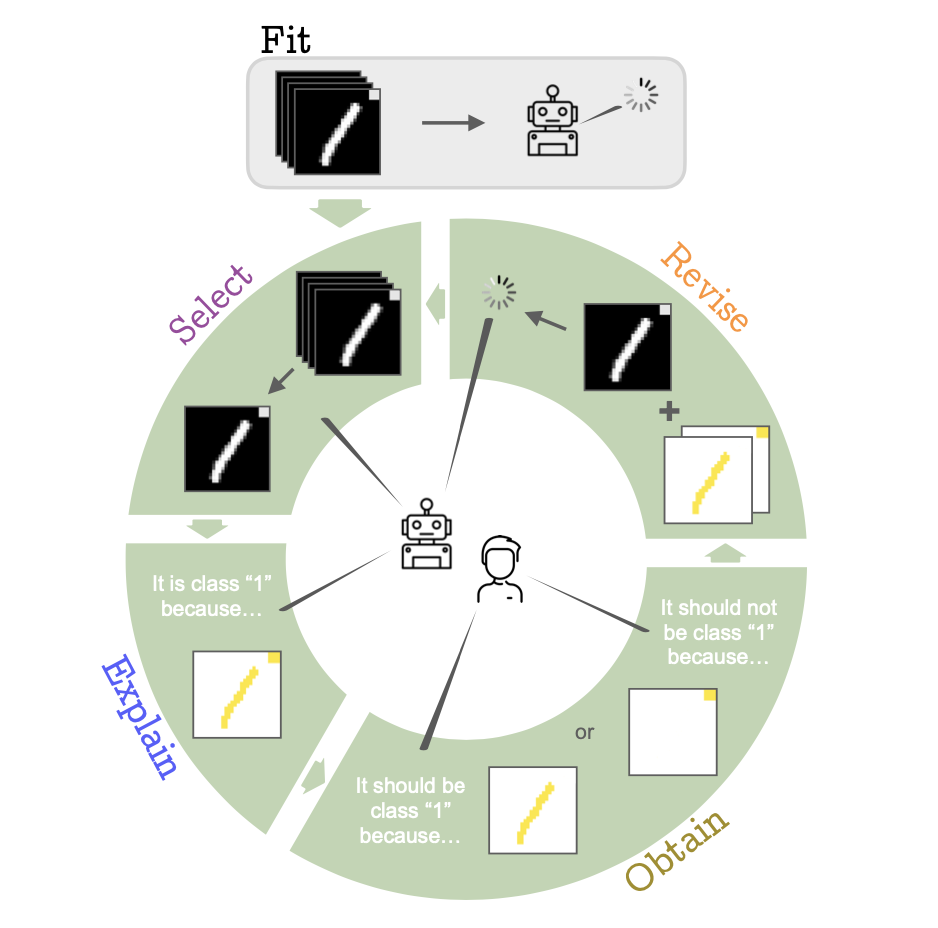
A typology for exploring the mitigation of shortcut behaviour
Felix Friedrich, Wolfgang Stammer, Patrick Schramowski, Kristian Kersting
[Nature Machine Intelligence 2023] [GitHub]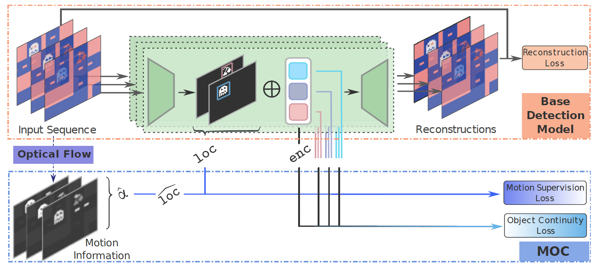
Boosting Object Representation Learning via Motion and Object Continuity
Quentin Delfosse, Wolfgang Stammer, Thomas Rothenbacher, Dwarak Vittal, Kristian Kersting
[ECML-PKDD 2023] [GitHub]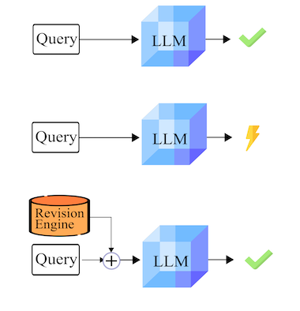
Revision Transformers: Instructing Language Models to Change Their Values
Felix Friedrich, Wolfgang Stammer, Patrick Schramowski, Kristian Kersting
[ECAI 2023]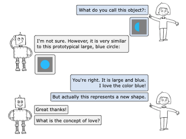
Interactive Disentanglement: Learning Concepts by Interacting with their Prototype Representations
Wolfgang Stammer, Marius Memmel, Patrick Schramowski, Kristian Kersting
[CVPR 2022] [GitHub]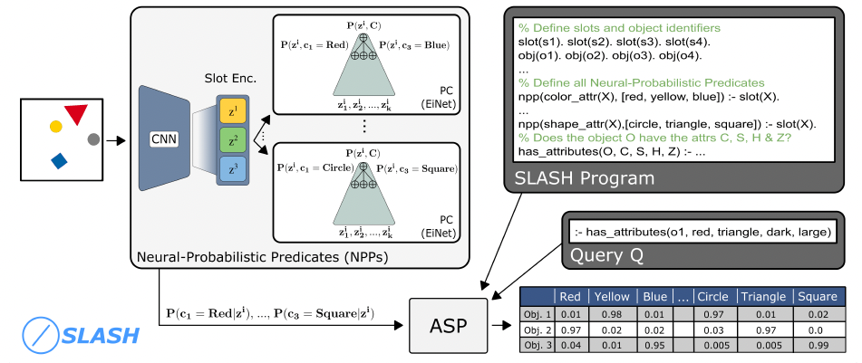
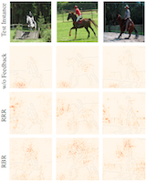
Right for better reasons: Training differentiable models by constraining their influence functions
Xiaoting Shao, Arseny Skryagin, Wolfgang Stammer, Patrick Schramowski, Kristian Kersting
[AAAI 2021]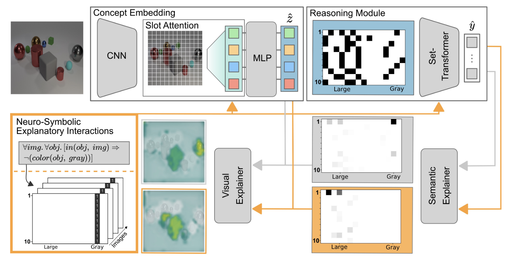
Right for the Right Concept: Revising Neuro-Symbolic Concepts by Interacting With Their Explanations
Wolfgang Stammer, Patrick Schramowski, Kristian Kersting
[CVPR 2021] [GitHub]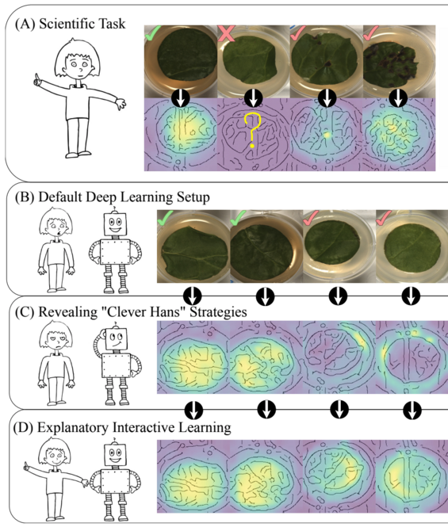
Making deep neural networks right for the right scientific reasons by interacting with their explanations
Patrick Schramowski, Wolfgang Stammer, Stefano Teso, Anna Brugger, Franziska Herbert, Xiaoting Shao, Hans-Georg Luigs, Anne-Katrin Mahlein, Kristian Kersting
[Nature Machine Intelligence 2020] [GitHub]Music
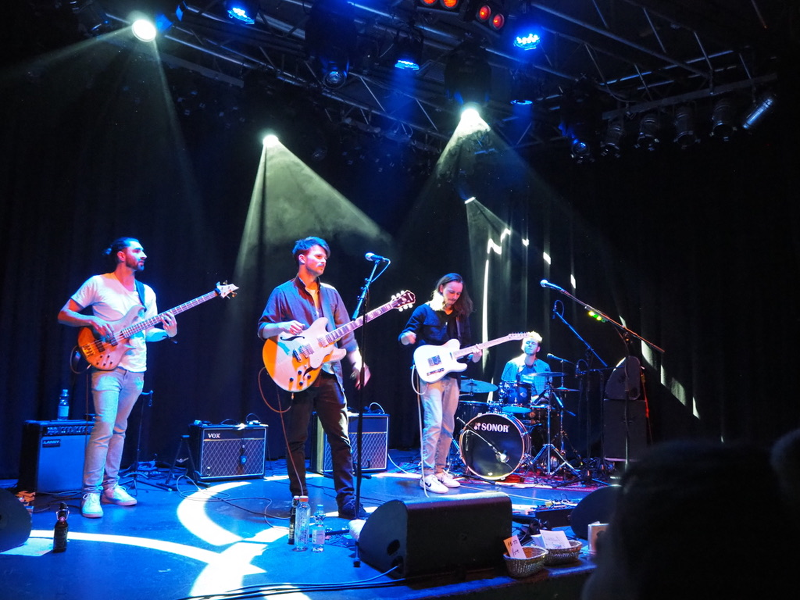
In addition to my work in AI and machine learning, I am also passionate about music. I play and write lyrics and music in the semi-professional band Spiderwebs & Foam. Our band blends various genres, from Rock, Jazz, Electronic, Folk. We have performed at several venues and continue to create and share our music with the world.